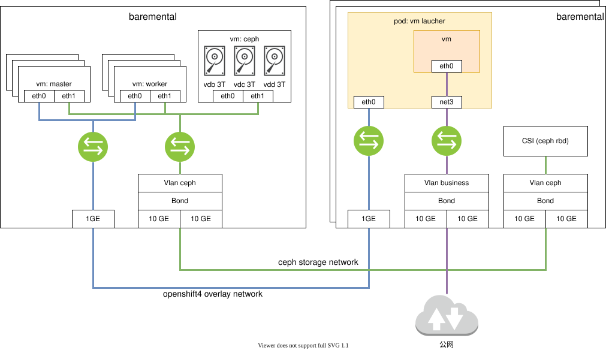

openshift install cnv with ocs and external ceph
本次测试的目标业务场景是，一个CS服务的虚机，用CNV跑在openshift上，虚机的镜像承载在ceph上，并测试虚机热迁移和虚机克隆场景。
由于测试环境所限，我们配置一个单节点的ceph，挂3个5.5T的盘，这个ceph节点，就用kvm，配置了16C32G，实际跑下来，感觉8C32G也是够的。
部署架构图

视频讲解
单节点ceph安装，ocs安装，对接外部ceph存储
cnv安装，导入虚机镜像，热迁移，克隆
install ceph
我们先安装这个ceph节点。
#####################################
## start to install ceph
cd /backup/wzh
lvremove -f ocp4/cephlv
lvcreate -y -L 230G -n cephlv ocp4
lvremove -f ocp4/cephdata01lv
lvcreate -y -L 3T -n cephdata01lv ocp4
lvremove -f ocp4/cephdata02lv
lvcreate -y -L 3T -n cephdata02lv ocp4
lvremove -f ocp4/cephdata03lv
lvcreate -y -L 3T -n cephdata03lv ocp4
virt-install --name=ocp4-ceph --vcpus=16 --ram=32768 \
--disk path=/dev/ocp4/cephlv,device=disk,bus=virtio,format=raw \
--disk path=/dev/ocp4/cephdata01lv,device=disk,bus=virtio,format=raw \
--disk path=/dev/ocp4/cephdata02lv,device=disk,bus=virtio,format=raw \
--disk path=/dev/ocp4/cephdata03lv,device=disk,bus=virtio,format=raw \
--os-variant centos7.0 --network network:openshift4,model=virtio \
--boot menu=on --location /home/data/openshift/ocp.4.3.21/rhel-server-7.8-x86_64-dvd.iso \
--initrd-inject rhel-ks-ceph.cfg --extra-args "inst.ks=file:/rhel-ks-ceph.cfg"
#######################################
# kvm's host bond and vlan
# https://access.redhat.com/documentation/en-us/red_hat_enterprise_linux/7/html/networking_guide/sec-configure_802_1q_vlan_tagging_using_the_command_line_tool_nmcli
# https://access.redhat.com/documentation/en-us/red_hat_enterprise_linux/7/html/networking_guide/sec-vlan_on_bond_and_bridge_using_the_networkmanager_command_line_tool_nmcli
nmcli con add type bond \
con-name bond-24 \
ifname bond-24 \
mode 802.3ad ipv4.method disabled ipv6.method ignore
nmcli con mod id bond-24 bond.options \
mode=802.3ad,miimon=100,lacp_rate=fast,xmit_hash_policy=layer2+3
nmcli con add type bond-slave ifname enp176s0f0 con-name enp176s0f0 master bond-24
nmcli con add type bond-slave ifname enp59s0f0 con-name enp59s0f0 master bond-24
nmcli con up bond-24
nmcli connection add type bridge con-name br-ceph ifname br-ceph ip4 192.168.18.200/24
nmcli con up br-ceph
nmcli con add type vlan con-name vlan-ceph ifname vlan-ceph dev bond-24 id 501 master br-ceph slave-type bridge
nmcli con up vlan-ceph
# no need below
# cat << EOF > /backup/wzh/virt-net.xml
# <network>
# <name>vm-br-ceph</name>
# <forward mode='bridge'>
# <bridge name='br-ceph'/>
# </forward>
# </network>
# EOF
# virsh net-define --file virt-net.xml
# virsh net-autostart br-ceph
# virsh net-start br-ceph
# virsh net-list
# # restore
# virsh net-undefine br-ceph
# virsh net-destroy br-ceph
cat << EOF > /root/.ssh/config
StrictHostKeyChecking no
UserKnownHostsFile=/dev/null
EOF
# restore
nmcli con del vlan-ceph
nmcli con del br-ceph
nmcli con del enp59s0f0
nmcli con del enp176s0f0
nmcli con del bond-24
########################################
# go to ceph vm
# https://www.cyberciti.biz/faq/linux-list-network-cards-command/
cat /proc/net/dev
nmcli con add type ethernet ifname eth1 con-name eth1
nmcli con modify eth1 ipv4.method manual ipv4.addresses 192.168.18.203/24
nmcli con modify eth1 connection.autoconnect yes
nmcli con reload
nmcli con up eth1
# restore
nmcli con del eth1
##########################################
# go to worker2 vm, to test the ceph vlan
nmcli con add type ethernet ifname ens9 con-name ens9
nmcli con modify ens9 ipv4.method manual ipv4.addresses 192.168.18.209/24
nmcli con modify ens9 connection.autoconnect yes
nmcli con reload
nmcli con up ens9
# restore
nmcli con del ens9
nmcli con del 'Wired connection 1'
##########################################
# go to worker1 vm, to test the ceph vlan
nmcli con add type ethernet ifname ens9 con-name ens9
nmcli con modify ens9 ipv4.method manual ipv4.addresses 192.168.18.208/24
nmcli con modify ens9 connection.autoconnect yes
nmcli con reload
nmcli con up ens9
# restore
nmcli con del ens9
nmcli con del 'Wired connection 1'
##########################################
# go to worker0 vm, to test the ceph vlan
nmcli con add type ethernet ifname ens9 con-name ens9
nmcli con modify ens9 ipv4.method manual ipv4.addresses 192.168.18.207/24
nmcli con modify ens9 connection.autoconnect yes
nmcli con reload
nmcli con up ens9
##########################################
# go to master2 vm, to test the ceph vlan
nmcli con add type ethernet ifname ens9 con-name ens9
nmcli con modify ens9 ipv4.method manual ipv4.addresses 192.168.18.206/24
nmcli con modify ens9 connection.autoconnect yes
nmcli con reload
nmcli con up ens9
# restore
nmcli con del ens9
nmcli con del 'Wired connection 1'
##########################################
# go to master1 vm, to test the ceph vlan
nmcli con add type ethernet ifname ens9 con-name ens9
nmcli con modify ens9 ipv4.method manual ipv4.addresses 192.168.18.205/24
nmcli con modify ens9 connection.autoconnect yes
nmcli con reload
nmcli con up ens9
# restore
nmcli con del ens9
nmcli con del 'Wired connection 1'
##########################################
# go to master0 vm, to test the ceph vlan
nmcli con add type ethernet ifname ens9 con-name ens9
nmcli con modify ens9 ipv4.method manual ipv4.addresses 192.168.18.204/24
nmcli con modify ens9 connection.autoconnect yes
nmcli con reload
nmcli con up ens9
# restore
nmcli con del ens9
nmcli con del 'Wired connection 1'
##########################################
# go to worker4 baremetal, to test the ceph vlan
nmcli con del 'Wired connection 1'
nmcli con del 'Wired connection 2'
nmcli con del 'Wired connection 3'
nmcli con del 'Wired connection 4'
nmcli con del 'Wired connection 5'
nmcli con del ens35f0.991
nmcli con del ens35f1
# https://access.redhat.com/solutions/1526613
nmcli con add type bond \
con-name bond-24 \
ifname bond-24 \
mode 802.3ad ipv4.method disabled ipv6.method ignore
nmcli con mod id bond-24 bond.options \
mode=802.3ad,miimon=100,lacp_rate=fast,xmit_hash_policy=layer2+3
nmcli con add type bond-slave ifname ens49f0 con-name ens49f0 master bond-24
nmcli con add type bond-slave ifname ens35f0 con-name ens35f0 master bond-24
nmcli con up bond-24
nmcli con add type vlan con-name vlan-ceph ifname vlan-ceph dev bond-24 id 501 ip4 192.168.18.211/24
nmcli con up vlan-ceph
# restore
nmcli con del vlan-ceph
nmcli con del ens49f0 ens35f0
nmcli con del bond-24
#############################################
# go to worker3 baremetal, to test the ceph vlan
nmcli con del 'Wired connection 1'
nmcli con del 'Wired connection 2'
nmcli con del 'Wired connection 3'
nmcli con del 'Wired connection 4'
nmcli con del 'Wired connection 5'
nmcli con add type bond \
con-name bond-24 \
ifname bond-24 \
mode 802.3ad ipv4.method disabled ipv6.method ignore
nmcli con mod id bond-24 bond.options \
mode=802.3ad,miimon=100,lacp_rate=fast,xmit_hash_policy=layer2+3
nmcli con add type bond-slave ifname ens49f0 con-name ens49f0 master bond-24
nmcli con add type bond-slave ifname ens35f0 con-name ens35f0 master bond-24
nmcli con up bond-24
nmcli con add type vlan con-name vlan-ceph ifname vlan-ceph dev bond-24 id 501 ip4 192.168.18.210/24
nmcli con up vlan-ceph
# restore
nmcli con del vlan-ceph
nmcli con del ens49f0 ens35f0
nmcli con del bond-24
#################################################
## for ceph vm
# install a 'fast' http proxy, then
subscription-manager --proxy=127.0.0.1:6666 register --username **** --password ********
# subscription-manager --proxy=127.0.0.1:6666 refresh
subscription-manager config --rhsm.baseurl=https://china.cdn.redhat.com
# subscription-manager config --rhsm.baseurl=https://cdn.redhat.com
subscription-manager --proxy=127.0.0.1:6666 refresh
# https://access.redhat.com/documentation/en-us/red_hat_ceph_storage/4/html-single/installation_guide/index
subscription-manager --proxy=127.0.0.1:6666 repos --disable=*
subscription-manager --proxy=127.0.0.1:6666 repos --enable=rhel-7-server-rpms \
--enable=rhel-7-server-extras-rpms \
--enable=rhel-7-server-supplementary-rpms \
--enable=rhel-7-server-optional-rpms \
--enable=rhel-7-server-rhceph-4-tools-rpms --enable=rhel-7-server-ansible-2.8-rpms \
--enable=rhel-7-server-rhceph-4-mon-rpms \
--enable=rhel-7-server-rhceph-4-osd-rpms \
--enable=rhel-7-server-rhceph-4-tools-rpms
yum clean all
yum makecache
yum update -y
systemctl enable --now firewalld
systemctl start firewalld
systemctl status firewalld
firewall-cmd --zone=public --add-port=6789/tcp
firewall-cmd --zone=public --add-port=6789/tcp --permanent
firewall-cmd --zone=public --add-port=6800-7300/tcp
firewall-cmd --zone=public --add-port=6800-7300/tcp --permanent
firewall-cmd --zone=public --add-port=6800-7300/tcp
firewall-cmd --zone=public --add-port=6800-7300/tcp --permanent
firewall-cmd --zone=public --add-port=6800-7300/tcp
firewall-cmd --zone=public --add-port=6800-7300/tcp --permanent
firewall-cmd --zone=public --add-port=8080/tcp
firewall-cmd --zone=public --add-port=8080/tcp --permanent
firewall-cmd --zone=public --add-port=443/tcp
firewall-cmd --zone=public --add-port=443/tcp --permanent
# firewall-cmd --zone=public --add-port=9090/tcp
# firewall-cmd --zone=public --add-port=9090/tcp --permanent
ssh-keygen
sed -i 's/#UseDNS yes/UseDNS no/' /etc/ssh/sshd_config
systemctl restart sshd
ssh-copy-id root@ceph
yum install -y ceph-ansible docker
cd /usr/share/ceph-ansible
# yum install -y docker
systemctl enable --now docker
cd /usr/share/ceph-ansible
/bin/cp -f group_vars/all.yml.sample group_vars/all.yml
/bin/cp -f group_vars/osds.yml.sample group_vars/osds.yml
/bin/cp -f site-docker.yml.sample site-docker.yml
/bin/cp -f site.yml.sample site.yml
/bin/cp -f group_vars/rgws.yml.sample group_vars/rgws.yml
/bin/cp -f group_vars/mdss.yml.sample group_vars/mdss.yml
# remember to set the env
# https://access.redhat.com/RegistryAuthentication
# REGISTRY_USER_NAME=
# REGISTRY_TOKEN=
cat << EOF > ./group_vars/all.yml
fetch_directory: ~/ceph-ansible-keys
monitor_interface: eth1
public_network: 192.168.18.0/24
# ceph_docker_image: rhceph/rhceph-4-rhel8
# ceph_docker_image_tag: "latest"
# containerized_deployment: true
ceph_docker_registry: registry.redhat.io
ceph_docker_registry_auth: true
ceph_docker_registry_username: ${REGISTRY_USER_NAME}
ceph_docker_registry_password: ${REGISTRY_TOKEN}
ceph_origin: repository
ceph_repository: rhcs
# ceph_repository_type: cdn
ceph_repository_type: iso
ceph_rhcs_iso_path: /root/rhceph-4.1-rhel-7-x86_64.iso
ceph_rhcs_version: 4
bootstrap_dirs_owner: "167"
bootstrap_dirs_group: "167"
dashboard_admin_user: admin
dashboard_admin_password: Redhat!23
node_exporter_container_image: registry.redhat.io/openshift4/ose-prometheus-node-exporter:v4.1
grafana_admin_user: admin
grafana_admin_password: Redhat!23
grafana_container_image: registry.redhat.io/rhceph/rhceph-4-dashboard-rhel8
prometheus_container_image: registry.redhat.io/openshift4/ose-prometheus:4.1
alertmanager_container_image: registry.redhat.io/openshift4/ose-prometheus-alertmanager:4.1
radosgw_interface: eth1
radosgw_address_block: 192.168.18.0/24
radosgw_civetweb_port: 8080
radosgw_civetweb_num_threads: 512
ceph_conf_overrides:
global:
osd_pool_default_size: 3
osd_pool_default_min_size: 2
osd_pool_default_pg_num: 32
osd_pool_default_pgp_num: 32
osd:
osd_scrub_begin_hour: 22
osd_scrub_end_hour: 7
EOF
cat << EOF > ./group_vars/osds.yml
devices:
- /dev/vdb
- /dev/vdc
- /dev/vdd
EOF
cat << EOF > ./hosts
[grafana-server]
ceph
[mons]
ceph
[osds]
ceph
[mgrs]
ceph
EOF
sed -i "s/#copy_admin_key: false/copy_admin_key: true/" ./group_vars/rgws.yml
cd /usr/share/ceph-ansible
mkdir -p ~/ceph-ansible-keys
ansible all -m ping -i hosts
ansible-playbook -vv site.yml -i hosts
# You can access your dashboard web UI at http://ceph:8443/ as an 'admin' user with 'Redhat!23' password
cd /root
ceph osd getcrushmap -o crushmap
crushtool -d crushmap -o crushmap.txt
sed -i 's/step chooseleaf firstn 0 type host/step chooseleaf firstn 0 type osd/' crushmap.txt
grep 'step chooseleaf' crushmap.txt
crushtool -c crushmap.txt -o crushmap-new
ceph osd setcrushmap -i crushmap-new
cd /usr/share/ceph-ansible
# test the result
ceph health detail
ceph osd pool create test 8
ceph osd pool set test pg_num 128
ceph osd pool set test pgp_num 128
ceph osd pool application enable test rbd
ceph -s
ceph osd tree
ceph osd pool ls
ceph pg dump
cat << EOF > hello-world.txt
wangzheng
EOF
rados --pool test put hello-world hello-world.txt
rados --pool test get hello-world fetch.txt
cat fetch.txt
# continue to install
cat << EOF >> ./hosts
[rgws]
ceph
[mdss]
ceph
EOF
ansible-playbook -vv site.yml --limit mdss -i hosts
ansible-playbook -vv site.yml --limit rgws -i hosts
# change mon param for S3
# 416 (InvalidRange)
# https://www.cnblogs.com/flytor/p/11380026.html
# https://www.cnblogs.com/fuhai0815/p/12144214.html
# https://access.redhat.com/solutions/3328431
# add config line
vi /etc/ceph/ceph.conf
# mon_max_pg_per_osd = 300
systemctl restart ceph-mon@ceph.service
ceph tell mon.* injectargs '--mon_max_pg_per_osd=1000'
ceph --admin-daemon /var/run/ceph/ceph-mon.`hostname -s`.asok config show | grep mon_max_pg_per_osd
ceph --admin-daemon /var/run/ceph/ceph-mgr.`hostname -s`.asok config set mon_max_pg_per_osd 1000
ceph osd lspools
ceph osd dump | grep 'replicated size'install ocs
接下来在openshift4里面安装ocs组件，来对接之前安装的ceph节点。
# check ceph versino
ceph tell osd.* version
python ceph-external-cluster-details-exporter.py --help
python ceph-external-cluster-details-exporter.py --rbd-data-pool-name test --rgw-endpoint 192.168.18.203:8080 --run-as-user client.ocs
# [{"kind": "ConfigMap", "data": {"maxMonId": "0", "data": "ceph=192.168.18.203:6789", "mapping": "{}"}, "name": "rook-ceph-mon-endpoints"}, {"kind": "Secret", "data": {"mon-secret": "mon-secret", "fsid": "bfaeb4fb-2f44-41e7-9539-1ca75bb394a8", "cluster-name": "openshift-storage", "admin-secret": "admin-secret"}, "name": "rook-ceph-mon"}, {"kind": "Secret", "data": {"userKey": "AQBZUWdfavnEDBAA0qwn1WLRbFV+0bUY+8ZnMQ==", "userID": "client.ocs"}, "name": "rook-ceph-operator-creds"}, {"kind": "Secret", "data": {"userKey": "AQBZUWdfC1EzDhAAjVV7+S3jKk8LcPUxxkIF9A==", "userID": "csi-rbd-node"}, "name": "rook-csi-rbd-node"}, {"kind": "StorageClass", "data": {"pool": "test"}, "name": "ceph-rbd"}, {"kind": "Secret", "data": {"userKey": "AQBZUWdfG8pvEBAAnldlqNj72gqBRvSxc8FB+g==", "userID": "csi-rbd-provisioner"}, "name": "rook-csi-rbd-provisioner"}, {"kind": "Secret", "data": {"adminID": "csi-cephfs-provisioner", "adminKey": "AQBZUWdfCxXWExAAiiaU1KIyjFsBxZB6h9WVtw=="}, "name": "rook-csi-cephfs-provisioner"}, {"kind": "Secret", "data": {"adminID": "csi-cephfs-node", "adminKey": "AQBZUWdf52L9ERAAXbK5upV2lO5phttDrwzJyg=="}, "name": "rook-csi-cephfs-node"}, {"kind": "StorageClass", "data": {"pool": "cephfs_data", "fsName": "cephfs"}, "name": "cephfs"}, {"kind": "StorageClass", "data": {"endpoint": "192.168.18.203:8080", "poolPrefix": "default"}, "name": "ceph-rgw"}]
oc get cephcluster -n openshift-storage
oc get storagecluster -n openshift-storage
# install chrome on kvm host
wget https://dl.google.com/linux/direct/google-chrome-stable_current_x86_64.rpm
yum install ./google-chrome-stable_current_*.rpm
google-chrome &install cnv
# upload win10.qcow2 to http server(helper)
scp win10.qcow2.gz root@192.168.8.202:/var/www/html/
# on helper
chmod 644 /var/www/html/win10.qcow2.gz
oc project demo
cat << EOF > win10.dv.yaml
apiVersion: cdi.kubevirt.io/v1alpha1
kind: DataVolume
metadata:
name: "example-import-dv-win10"
spec:
source:
http:
url: "http://192.168.8.202:8080/win10.qcow2.gz"
pvc:
volumeMode: Block
storageClassName: ocs-external-storagecluster-ceph-rbd
accessModes:
- ReadWriteMany
resources:
requests:
storage: "40Gi"
EOF
oc apply -n demo -f win10.dv.yaml
oc get dv,pvc
# create a vm, and test the live migration
###############################################################
# network
#####################################
# worker4 baremetal, nic bond + vlan + bridge for business
nmcli con add type bond \
con-name bond-13 \
ifname bond-13 \
mode 802.3ad ipv4.method disabled ipv6.method ignore
nmcli con mod id bond-13 bond.options \
mode=802.3ad,miimon=100,lacp_rate=fast,xmit_hash_policy=layer2+3
nmcli con add type bond-slave ifname ens49f1 con-name ens49f1 master bond-13
nmcli con add type bond-slave ifname ens35f1 con-name ens35f1 master bond-13
nmcli con up bond-13
nmcli connection add type bridge con-name br-business ifname br-business ip4 172.17.4.211/24
nmcli con up br-business
nmcli con add type vlan con-name vlan-business ifname vlan-business dev bond-13 id 991 master br-business slave-type bridge
nmcli con up vlan-business
#####################################
# worker4 baremetal, nic bond + vlan + bridge for business
nmcli con add type bond \
con-name bond-13 \
ifname bond-13 \
mode 802.3ad ipv4.method disabled ipv6.method ignore
nmcli con mod id bond-13 bond.options \
mode=802.3ad,miimon=100,lacp_rate=fast,xmit_hash_policy=layer2+3
nmcli con add type bond-slave ifname ens49f1 con-name ens49f1 master bond-13
nmcli con add type bond-slave ifname ens35f1 con-name ens35f1 master bond-13
nmcli con up bond-13
nmcli connection add type bridge con-name br-business ifname br-business ip4 172.17.4.210/24
nmcli con up br-business
nmcli con add type vlan con-name vlan-business ifname vlan-business dev bond-13 id 991 master br-business slave-type bridge
nmcli con up vlan-business
###############################
# try to add 2nd nic
cat << EOF > nic.vm.yaml
apiVersion: "k8s.cni.cncf.io/v1"
kind: NetworkAttachmentDefinition
metadata:
name: bridge-network-business
annotations:
k8s.v1.cni.cncf.io/resourceName: bridge.network.kubevirt.io/br-business
spec:
config: '{
"cniVersion": "0.3.1",
"name": "bridge-network-business",
"plugins": [
{
"type": "cnv-bridge",
"bridge": "br-business"
},
{
"type": "cnv-tuning"
}
]
}'
EOFCS 游戏业务场景测试
###################################
# add management vlan to kvm host
nmcli con add type vlan con-name vlan-management ifname vlan-management dev bond-24 id 500 ip4 1.41.0.124/27
nmcli con up vlan-management
#restore
nmcli con del vlan-management
# upload cs server image
# for python3
python -m http.server 7800
# for python2
python -m SimpleHTTPServer 7800
oc project demo
cat << EOF > cnv.cs.dv.yaml
apiVersion: cdi.kubevirt.io/v1alpha1
kind: DataVolume
metadata:
name: "import-dv-cs-yitu"
spec:
source:
http:
url: "http://192.168.8.251:7800/yitu.raw"
pvc:
volumeMode: Block
storageClassName: ocs-external-storagecluster-ceph-rbd
accessModes:
- ReadWriteMany
resources:
requests:
storage: "150Gi"
EOF
oc apply -n demo -f cnv.cs.dv.yaml
oc get dv,pvc
业务测试服务器是一个CS业务，还是个ubuntu14，我们启动这个虚机，并且配置他的网络。 interface /etc/network/interfaces.d/eth0.cfg for cs server (ubuntu 14)
# The primary network interface
auto eth0
iface eth0 inet static
address 172.17.4.215
netmask 255.255.255.0
gateway 172.17.4.254
dns-nameservers 114.114.114.114ifdown eth0
ifup eth0cnv live migration
# upload cs server image
# for python3
python -m http.server 7800
# for python2
python -m SimpleHTTPServer 7800
oc project demo
cat << EOF > cnv.cs.dv.yaml
apiVersion: cdi.kubevirt.io/v1alpha1
kind: DataVolume
metadata:
name: "import-dv-rhel-78"
spec:
source:
http:
url: "http://192.168.8.251:7800/rhel7.8.img"
pvc:
volumeMode: Block
storageClassName: ocs-external-storagecluster-ceph-rbd
accessModes:
- ReadWriteMany
resources:
requests:
storage: "10Gi"
EOF
oc apply -n demo -f cnv.cs.dv.yaml
oc get dv,pvc
############################################
# try to debug the vm stuck after node failure, but find out this is not working.
# we try to decrease the pdb, but no use, vm still not move to another node.
oc get pdb -n demo
# NAME MIN AVAILABLE MAX UNAVAILABLE ALLOWED DISRUPTIONS AGE
# kubevirt-disruption-budget-j5zlc 2 N/A 0 12m
# kubevirt-disruption-budget-qsk9j 2 N/A 0 12m
oc patch pdb kubevirt-disruption-budget-j5zlc -n demo --type=merge -p '{"spec":{"minAvailable":0}}'
oc patch pdb kubevirt-disruption-budget-qsk9j -n demo --type=merge -p '{"spec":{"minAvailable":0}}'
# Cannot evict pod as it would violate the pod's disruption budget.
oc adm drain worker-3.ocp4.redhat.ren --grace-period=10 --force --delete-local-data --ignore-daemonsets
oc adm uncordon worker-3.ocp4.redhat.rendebug for node failure senario
# evictionStrategy: LiveMigrate
# power off and power on the VM
# remove evictionStrategy: LiveMigrate settings,
# and find out this doesn't work
oc patch -n demo vm/rhel78 --type json -p '[{"op": "remove", "path": "/spec/template/spec/evictionStrategy"}]'
oc get vm/rhel78 -o yaml | grep evictionStrategy
# restore evictionStrategy: LiveMigrate settings
oc patch -n demo vm/rhel78 --type=merge -p '{"spec": {"template": {"spec": {"evictionStrategy":"LiveMigrate"} } } }'
# oc delete pod -n openshift-storage noobaa-db-0 --force --grace-period=0
# oc get pod -n openshift-storage
# no result out for these 2 command
oc get pod/virt-launcher-rhel78-r6d9m -o yaml | grep -A2 finalizer
oc get vm/rhel78 -o yaml | grep -A2 finalizer
# we can see there are finalizers on vmi
oc get vmi/rhel78 -o yaml | grep -A2 finalizer
# finalizers:
# - foregroundDeleteVirtualMachine
# generation: 20
# poweroff the node, to reproduce the issue
# when the node is notready, and pod is terminating
oc get node
# NAME STATUS ROLES AGE VERSION
# master-0.ocp4.redhat.ren Ready master 102d v1.18.3+6c42de8
# master-1.ocp4.redhat.ren Ready master 102d v1.18.3+6c42de8
# master-2.ocp4.redhat.ren Ready master 102d v1.18.3+6c42de8
# worker-0.ocp4.redhat.ren Ready worker 102d v1.18.3+6c42de8
# worker-1.ocp4.redhat.ren Ready worker 102d v1.18.3+6c42de8
# worker-2.ocp4.redhat.ren Ready worker 102d v1.18.3+6c42de8
# worker-3.ocp4.redhat.ren NotReady cnv,worker 93d v1.18.3+6c42de8
# worker-4.ocp4.redhat.ren Ready cnv,worker 91d v1.18.3+6c42de8
oc get pod
# NAME READY STATUS RESTARTS AGE
# v2v-vmware-568b875554-lsj57 1/1 Running 0 2d6h
# virt-launcher-rhel78-r6d9m 1/1 Terminating 0 44m
oc get vmi
# NAME AGE PHASE IP NODENAME
# rhel78 52m Running 172.17.4.15/24 worker-3.ocp4.redhat.ren
# below is working
oc patch -n demo vmi/rhel78 --type=merge -p '{"metadata": {"finalizers":null}}'
# after node failure, delete vmi
oc delete vmi/rhel78
oc get pod
# NAME READY STATUS RESTARTS AGE
# v2v-vmware-568b875554-lsj57 1/1 Running 0 2d6h
# virt-launcher-rhel78-f5ltc 1/1 Running 0 32s
# virt-launcher-rhel78-r6d9m 1/1 Terminating 0 46m
# no use below, because we are bare mental.
cat << EOF > healthcheck.yaml
apiVersion: machine.openshift.io/v1beta1
kind: MachineHealthCheck
metadata:
name: example
namespace: openshift-machine-api
spec:
selector:
matchLabels:
machine.openshift.io/cluster-api-machine-role: cnv
unhealthyConditions:
- type: "Ready"
timeout: "300s"
status: "False"
- type: "Ready"
timeout: "300s"
status: "Unknown"
maxUnhealthy: "80%"
EOF
oc apply -f healthcheck.yaml
oc get MachineHealthCheck -n openshift-machine-api
# NAME MAXUNHEALTHY EXPECTEDMACHINES CURRENTHEALTHY
# example 80%其他备忘
oc get nns worker-4.ocp4.redhat.ren -o yamlapiVersion: nmstate.io/v1alpha1
kind: NodeNetworkState
metadata:
creationTimestamp: "2020-09-16T03:15:51Z"
generation: 1
managedFields:
- apiVersion: nmstate.io/v1alpha1
fieldsType: FieldsV1
fieldsV1:
f:metadata:
f:ownerReferences:
.: {}
k:{"uid":"135e4844-bf87-465a-8f6a-5fc1f85e5beb"}:
.: {}
f:apiVersion: {}
f:kind: {}
f:name: {}
f:uid: {}
f:status:
.: {}
f:currentState:
.: {}
f:dns-resolver:
.: {}
f:config:
.: {}
f:search: {}
f:server: {}
f:running:
.: {}
f:search: {}
f:server: {}
f:interfaces: {}
f:route-rules:
.: {}
f:config: {}
f:routes:
.: {}
f:config: {}
f:running: {}
f:lastSuccessfulUpdateTime: {}
manager: kubernetes-nmstate
operation: Update
time: "2020-09-23T01:38:50Z"
name: worker-4.ocp4.redhat.ren
ownerReferences:
- apiVersion: v1
kind: Node
name: worker-4.ocp4.redhat.ren
uid: 135e4844-bf87-465a-8f6a-5fc1f85e5beb
resourceVersion: "43763614"
selfLink: /apis/nmstate.io/v1alpha1/nodenetworkstates/worker-4.ocp4.redhat.ren
uid: 095a8223-d139-4add-9fcf-0e0435191f78
status:
currentState:
dns-resolver:
config:
search: []
server:
- 192.168.8.202
running:
search: []
server:
- 192.168.8.202
interfaces:
- ipv4:
dhcp: false
enabled: false
ipv6:
autoconf: false
dhcp: false
enabled: false
link-aggregation:
mode: 802.3ad
options:
ad_actor_system: "00:00:00:00:00:00"
lacp_rate: fast
miimon: "100"
xmit_hash_policy: layer2+3
slaves:
- ens49f1
- ens35f1
mac-address: B8:59:9F:EF:71:5D
mtu: 1500
name: bond-13
state: up
type: bond
- ipv4:
dhcp: false
enabled: false
ipv6:
autoconf: false
dhcp: false
enabled: false
link-aggregation:
mode: 802.3ad
options:
ad_actor_system: "00:00:00:00:00:00"
lacp_rate: fast
miimon: "100"
xmit_hash_policy: layer2+3
slaves:
- ens49f0
- ens35f0
mac-address: B8:59:9F:EF:71:5C
mtu: 1500
name: bond-24
state: up
type: bond
- bridge:
options:
group-forward-mask: 0
mac-ageing-time: 300
multicast-snooping: true
stp:
enabled: true
forward-delay: 15
hello-time: 2
max-age: 20
priority: 32768
port:
- name: vlan-business
stp-hairpin-mode: false
stp-path-cost: 100
stp-priority: 32
ipv4:
address:
- ip: 172.17.4.211
prefix-length: 24
dhcp: false
enabled: true
ipv6:
address:
- ip: fe80::1a6a:4414:8fec:940e
prefix-length: 64
auto-dns: true
auto-gateway: true
auto-routes: true
autoconf: true
dhcp: true
enabled: true
mac-address: B8:59:9F:EF:71:5D
mtu: 1500
name: br-business
state: up
type: linux-bridge
- ipv4:
enabled: false
ipv6:
enabled: false
mac-address: 1e:d4:cc:be:5e:49
mtu: 1450
name: br0
state: down
type: ovs-interface
- ethernet:
auto-negotiation: true
duplex: full
speed: 10000
sr-iov:
total-vfs: 0
vfs: []
ipv4:
dhcp: false
enabled: false
ipv6:
autoconf: false
dhcp: false
enabled: false
mac-address: B8:59:9F:EF:71:5C
mtu: 1500
name: ens35f0
state: up
type: ethernet
- ethernet:
auto-negotiation: true
duplex: full
speed: 10000
sr-iov:
total-vfs: 0
vfs: []
ipv4:
dhcp: false
enabled: false
ipv6:
autoconf: false
dhcp: false
enabled: false
mac-address: B8:59:9F:EF:71:5D
mtu: 1500
name: ens35f1
state: up
type: ethernet
- ipv4:
enabled: false
ipv6:
enabled: false
mac-address: B4:96:91:67:2D:A4
mtu: 1500
name: ens47f0
state: down
type: ethernet
- ethernet:
auto-negotiation: true
duplex: full
speed: 1000
sr-iov:
total-vfs: 0
vfs: []
ipv4:
address:
- ip: 192.168.8.211
prefix-length: 24
dhcp: false
enabled: true
ipv6:
address:
- ip: fe80::b696:91ff:fe67:2da5
prefix-length: 64
autoconf: false
dhcp: false
enabled: true
mac-address: B4:96:91:67:2D:A5
mtu: 1500
name: ens47f1
state: up
type: ethernet
- ethernet:
auto-negotiation: true
duplex: full
speed: 10000
sr-iov:
total-vfs: 0
vfs: []
ipv4:
dhcp: false
enabled: false
ipv6:
autoconf: false
dhcp: false
enabled: false
mac-address: B8:59:9F:EF:71:5C
mtu: 1500
name: ens49f0
state: up
type: ethernet
- ethernet:
auto-negotiation: true
duplex: full
speed: 10000
sr-iov:
total-vfs: 0
vfs: []
ipv4:
dhcp: false
enabled: false
ipv6:
autoconf: false
dhcp: false
enabled: false
mac-address: B8:59:9F:EF:71:5D
mtu: 1500
name: ens49f1
state: up
type: ethernet
- ipv4:
enabled: false
ipv6:
enabled: false
mtu: 65536
name: lo
state: down
type: unknown
- ipv4:
enabled: false
ipv6:
enabled: false
mac-address: de:b2:ca:03:6b:fa
mtu: 1450
name: tun0
state: down
type: ovs-interface
- ipv4:
dhcp: false
enabled: false
ipv6:
autoconf: false
dhcp: false
enabled: false
mac-address: B8:59:9F:EF:71:5D
mtu: 1500
name: vlan-business
state: up
type: vlan
vlan:
base-iface: bond-13
id: 991
- ipv4:
address:
- ip: 192.168.18.211
prefix-length: 24
dhcp: false
enabled: true
ipv6:
address:
- ip: fe80::e852:70de:e7be:8f04
prefix-length: 64
auto-dns: true
auto-gateway: true
auto-routes: true
autoconf: true
dhcp: true
enabled: true
mac-address: B8:59:9F:EF:71:5C
mtu: 1500
name: vlan-ceph
state: up
type: vlan
vlan:
base-iface: bond-24
id: 501
- ipv4:
enabled: false
ipv6:
enabled: false
mac-address: C2:AE:59:84:C6:E0
mtu: 65000
name: vxlan_sys_4789
state: down
type: vxlan
vxlan:
base-iface: ""
destination-port: 4789
id: 0
remote: ""
route-rules:
config: []
routes:
config:
- destination: 0.0.0.0/0
metric: -1
next-hop-address: 192.168.8.1
next-hop-interface: ens47f1
table-id: 0
running:
- destination: 172.17.4.0/24
metric: 425
next-hop-address: ""
next-hop-interface: br-business
table-id: 254
- destination: 0.0.0.0/0
metric: 104
next-hop-address: 192.168.8.1
next-hop-interface: ens47f1
table-id: 254
- destination: 192.168.8.0/24
metric: 104
next-hop-address: ""
next-hop-interface: ens47f1
table-id: 254
- destination: 192.168.18.0/24
metric: 400
next-hop-address: ""
next-hop-interface: vlan-ceph
table-id: 254
- destination: fe80::/64
metric: 425
next-hop-address: ""
next-hop-interface: br-business
table-id: 254
- destination: fe80::/64
metric: 256
next-hop-address: ""
next-hop-interface: ens47f1
table-id: 254
- destination: fe80::/64
metric: 400
next-hop-address: ""
next-hop-interface: vlan-ceph
table-id: 254
- destination: ff00::/8
metric: 256
next-hop-address: ""
next-hop-interface: br-business
table-id: 255
- destination: ff00::/8
metric: 256
next-hop-address: ""
next-hop-interface: ens47f1
table-id: 255
- destination: ff00::/8
metric: 256
next-hop-address: ""
next-hop-interface: vlan-ceph
table-id: 255
lastSuccessfulUpdateTime: "2020-09-23T01:38:50Z"next step
Multi-Queue
- https://kubevirt.io/user-guide/#/creation/disks-and-volumes?id=virtio-block-multi-queue
- https://kubevirt.io/user-guide/#/creation/interfaces-and-networks?id=virtio-net-multiqueue
cases:
- https://access.redhat.com/support/cases/#/case/02763144